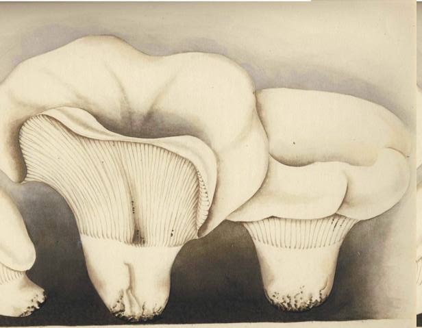
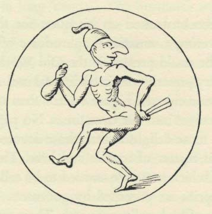

Scholars have not found the derivation of 'mushroom', and therefore the field
lies open for amateur inquirers. The word has circulated in English for some five
centuries at least, in many forms, and the variant 'musheron' is still often heard
in the United States. It is clear that the English borrowed the word from the
French language spoken at court in the Middle Ages, the French word surviving
in modern French as mousseron. Either the Normans or French showed the English
for the first time that certain wild fungi could be eaten, and the need for a
name for the edible fungi was met by 'mushroom'. In the course of time it has
come to designate edible fungi in general and specifically the psalliota campestris.
This specific use developed later, after the art of cultivating the field mushroom
gave to it unique importance - such importance, indeed, that its French name,
champignon, superseded mousseron as the generic word for mushrooms in France.
It used to be thought that mousseron sprang from mousse, meaning 'moss', but
for a long time not a single French philologist has espoused what is certainly
a popular etymology, which was first propounded in print in 1651 by N. de
Bonnefons, the gardener. It is clear that the present spelling of mousseron has
come about to satisfy the popular association of ideas. Among the oldest forms
of the word in French are two - moisseron and meisseron - that could not be
linked to moss.1 Both Oscar Bloch and Albert Dauzat arrive at the conclusion
that the word is of pre-Latin origin - a convenient catchbasin, in the world
of Romance languages, for all problem children of etymology.
Our word is not confined to English and French. Jean-Baptiste Barla, a first-class
mycologist and faithful observer, reported that in the Provence, around Nice,
the natives say moussairoun and mousselet.2 The Catalans speak of the moixerno.
The word also appears in a single dialect of Basque, in Lower Navarre, where it
takes the form of motxolon. Wherever the word is used on the Continent, in
French, Provencal, Catalan, and Basque, it designates the species of mush-
room known as the tricholoma gambosum or georgii. The dialectical variants
of 'mushroom' in English have been numerous, and among them several stem
back to the obsolete French forms: mesheroom, mesheroon, and mishroom.
1. French philologists cite a Latin passage in the 6th century medical writer Anthimus wherein occurs mussi-
rionetn, standing in the accusative case. This would be the oldest citation of our word. But Professor Joshua
Whatmough of Harvard has shown that it is an interpolation. Of the seven ms. sources for Anthimus, five that
go back in part independently to the archetype do not include the passage in which this word occurs. Of the
other two, one is an nth century ms. and the other refers to an event that took place in A.D. 849. The evid
ence seems to point to the 9th century for the interpolation.
2. Les Champignons des Alpes, Nice, 1888.
There is a Welsh form, maesrin (pronounced 'mice-rin'), which may have been
only a bookish word, but which preserves for us the early sound as known to
the Welsh when they borrowed it.
Some years ago Robert Graves suggested to us that we consider the Greek
word for mushroom as the source of the French and English terms. We think
he was right. Our readers will recall that in German Schivamm means both
fungus and sponge, but that the Greeks limited the corresponding word in their
language, σπόγγος, to 'sponge'. For mushroom they used μύκης, whence the
science of 'mycology'. The Greek word is inextricably associated with μύζα,
which in Latin becomes mucus, or when referring to nasal mucus, tnuccus. All
these words are repulsive for us. For the Greeks mushrooms were mucoid things,
slimy growths, a far remove from the Russians' 'fat of the earth'. There is
abundant evidence that the Greeks were and remain mycophobes. The evolu-
tion of Greek μύκης into the Provencal, Catalan, and obsolete French words
is not hard to reconstruct, so far as the first syllable goes.1
But this does not solve our problem, for we must still explain the ending -
(e}ron of the French word. Proceeding on the surmise that it is a suffix, we
sought to determine its value by assembling a list of as many French words
ending with it as we could find. (It is surprising that in a language so thoroughly
dissected as French no one had done this before.) Our inquiry was fruitful. The
nouns ending in -(e)ron fall into three groups, according to the purpose
served by the suffix. First are the words that designate an occupation:
1. bucheron, woodcutter,
2. forgeron, blacksmith, and
3. vigneron, vine-grower.
There is a second group in which the ending is a diminutive, a variant of the
diminutive -on, as in ourson, little bear, and raton, 'little rat'. The variant in -ron
is used where there is need to preserve the value of the final silent e of the
original noun:2
1. aileron, small wing,
2. boteron, small toad,
3. chaperon, small headgear,
4. coteron, cotteron, diminutive of cotte, English 'coat',
5. courgeron, kind of courge or gourd,
6. laideron, an ill-favored woman,
1. It is necessary to assume that the Greek word passed through unrecorded popular Latin forms in mux- and
mix-, sound mutations that can be paralleled in other words.
2. Cuceron, cusseron, the insect, an enemy of vegetable gardeners, seems to have developed from cusson, cosson,
by a false popular analogy with puceron.
1 4 6
MUCUS, MUSHROOMS, AND LOVE
7. lisseron, liceron, diminutive of lisse, lice,
8. mancheron, short sleeve,
9. moucheron, gnat,
10. napperon, napkin,
11. paleron, shoulder-blade,
12. pelleron, baker's scoop,
13. piqueron, diminutive of pique,
14. puceron, plant-louse, aphis, and
15. vesceron, a small species of vetch, diminutive of vesce.
The third group, which is the one relevant to our argument, consists of the
following words, of which no less than four refer to mushrooms:
1. auburon,
8. fumeron,
2. mousseron,
9. grateron and glouteron,
3. potiron, and
10. laiteron, laceron, and lacheron,
4. sauceron,
n. liseron,
5. biberon,
12. longeron,
6. bourgeron,
13. quarteron, and
7. culeron,
14. secheron.
In every instance the suffix adds particularity to a less determinate idea conveyed
by the stem. The general condenses into the particular. A 'mass' noun becomes
a 'countable' one.
Let us examine these fourteen words one by one. A biberon is a feeding-cup
or baby's bottle, from the Latin verb bibere. A bourgeron is a jacket made from a
material formerly called borge. A longeron is a girder that runs lengthwise. A
fumeron is the half-burnt charcoal that gives off smoke. A quarteron is a quadroon.
Secheron is the word used in the mountainous east of France to designate a meadow
that is chronically parched. The culeron is the 'crupper loop' that passes around
the horse's tail. The other words are all names of species of plants. Grateron (=
glouteron) is a kind of briar. Laiteron (= laceron, lacheron} is milk-weed. Liceron, from
Us, is the bindweed or morning-glory. Potiron is a species of gourd and a fungus.
Sauceron is a regional word reported in the Saone-et-Loire for 'mushroom',
presumably from the verb saucer, to sop or soak or dunk, referring to the
wetness of many wild mushrooms. Auburon is the most interesting of all. It
is current in the East, where the French and German worlds meet. It designates
the lactarius piperatus, and it comes down from the Latin albus, white. Some-
times it is written oberon. This is a large, fleshy, white mushroom. In a good
mushroom season, when the forest floor is carpeted with an immense number
of mushrooms of many kinds, the big, sturdy oberon dominates its world, king
of its realm. From afar it can be sighted, and as the sun sets and the shadows
147
deepen, its brilliant whiteness seems to catch and hold the light a little longer.
It is no wonder that Oberon is king of the fairies. Yet so far as we can discover,
no one has hitherto recognized the fungal ties of this famous character in French
and German folklore, whom Shakespere summoned to his stage.1 In Russia the
auburon or lactarius piperatus is called the gmzd', and, as we have seen on an
earlier page, the gmzd' plays a role in Russia's fungal folklore that recalls Oberon's.
Our common nouns ending in -(e)ron are mostly rare and archaic words.
Since our etymology for mousseron is persuasive only to the extent that we
succeed in explaining its suffix, we welcome the abundant additional testimony
supplied to us by a different category of words - family names. With these
proper nouns lies the primary role of our suffix, and it is precisely here that
particularity is of the essence: the general term is reduced in its application to a
distinctive family unit. Attributes of physique or personality, occupation, geo-
graphical origin, social status - the common nouns and place names become
individualized as family names by the addition of -(e}ron. Furthermore, in this
list we sense the common denominator that links together the three divisions
of our common nouns, and find that they all belong really to a single class,
not three. Our suffix, in essence, contributes particularity to the primary word.
The reader who desires to arrive at the meaning of these proper nouns will
consult Albert Dauzat's Dictionnaire Etymologique des Noms de Famille et Prenoms
de France, published by Larousse in 1951.
Bauberon
Chaumeron
Langeron
Masseron
Biberon
Chauveron
Legeron
Merceron
Boucheron
Chaveron
Ligneron
Moucheron
Bouveron
Cucheron
Manceron
Pailleron
Brosseron
Fougeron
Mancheron
Percheron
Brugeron
Gagneron
Manseron
Rongeron
Chalveron
Goutteron
Marceron
Secheron
Chaperon
Guederon
Marcheron
Vacheron
If, then, we are right in our argument, the mushroom or mousseron was once,
metaphorically, a glob of mucus.2 Its original meaning long forgotten, the word
1. Oberon in English is a literary character, without indigenous roots, borrowed from the French, where he
appears in Old French in Huon de Bordeaux. He is 'Alberich' in the medieval German poem Ortnit, a name that
suggests the German Alp, 'elf. But Jacob Grimm in his Teutonic Mythology, London, 1883, vol. n, p. 453, links
'Alberich' with whiteness, from the Latin albus, a view that, as we now discover, is reinforced by the vernacular
name given to the dazzling-white lactarius piperatus along the eastern marches of the French-speaking world.
2. And also a glob of froth, if our suspicion is right that mousse, 'froth', has the same origin. But this word mousse
and its homonym meaning 'moss' are so tangled together in their histories that we merely mention the pos
sibility without arguing the case.
The obsolete meckeron, 'wick', 'little wick', was derived through Latin from Gr. |iu£a, and is cousin therefore
to meisseron, tnoisseron, mousseron. Surely the obsolete adjective mescheros, 'dirtied', 'blackened', has the same
148
PLATE XXXI
Jean-Henri Fabre. Lactarius piperatus Fr. ex Scop.
French (east): oberon; Russian: gruzd'.

MUCUS, MUSHROOMS, AND LOVE
has shifted in status (as occasionally words do), and from its mucoid origins has
become appetizing. We believe that the Basque language offers us circumstantial
evidence in support of our theory. As we have seen, in the Basque dialect of
Lower Navarre our word appears as motxolon, and it carries the same meaning
as mousseron in French. In the Souletin dialect the same species is the buxeti;
we trace this also to mousseron, for the Romance letter 'm' can become 'b' in
Basque; e.g., the Spanish word for 'mill', molino, appearing as borin or bom
in certain Basque dialects; also the French word for 'cabinet-maker' or joiner',
memiisier, becoming in Soule beniise. In many other sections of the Basque
country, ziza takes the place of motxolon, designating the tricholoma gambo-
sum and also tending to associate itself with other edible species. Thus it is a
precise translation of mousseron. The derivation of ziza has never been deter-
mined. But we discover that in the Souletin dialect of Basque, zintz means 'nasal
mucus', and is probably a word of imitative origin. Professor Rene Lafon
informs us that phonetically ziza could be related to zintz. We suggest that it
is derived from zintz or an earlier form of that word, and that it was thus a
translation of mousseron made at a time when the original meaning of the French
word was still present in men's minds. If we are right, mousseron appears in
Basque as motxolon, a borrowed word, in Lower Navarre; as buxeti, also a bor-
rowing, in the Soule; and as ziza, a translation, elsewhere. Thus, if this argument
stands up under scrutiny, we provide a satisfying etymology for the Basque
ziza and simultaneously buttress our fungal word pattern derived from μύκης.
For 'mushroom' and mousseron we have dared to propose an etymology and a
latent meaning where scholars have been at a loss. There is another French fungal
word, le cepe de Bordeaux, where we shall challenge the conventional etymology.
The standard sources have accepted the popular notion that le cepe is the same
word as le ceps de vigne, 'vine-stock', both descended from the Latin cippus,
'stake'. As to le cepe, we think the case has gone by default, the philologists
having admitted a popular etymology by inattention. The boletus edulis does
not suggest a stake, nor has such a metaphor any parallel in the fungal vocabulary
of Europe.
We know much about the role of the boletus edulis in the social history of
Western Europe. The Romans called it the snillus, 'swine-mushroom', a word
that apparently survived as silli in the dialect of Naples down to the end of
derivation and refers to the wick's snuff. Philologists have been baffled by the origin oftndchurer, 'to blacken with
soot', and mdchuron, 'smudge' or 'smut' (on the face), 'smudged impression' (in printing). Should they not
consider mecheron and the wick's snuff as the key to the etymon? The vowel change parallelcs tache, 'stain',
descended from the older teche.
149
the 18th century.1 In standard Italian it is the porcino, 'porcine' mushroom. Why
these names? Some say the mushroom in its appearance suggests the swarthy,
rotund rear-end of a porker. Some point to its greasiness when cooked fresh:
it exudes quantities of viscid fluid that gastronomes associate with rich, melted
butter, but that to mycophobes suggests loathsome mucus. When dried the
boletus edulis tastes like meat, which explains the addiction to it of the monks
in the Russian church during the long fasts. We have seen how the Flemings
began to eat ceps in the iyth century, a cultural innovation inspired by Italian
merchants. The progress of the cep in the kitchens of the great elsewhere was
slow. We have combed upwards of a score of French cookbooks of the iyth
and 18th centuries and found no mention in them of the cep, though they all
speak of morels, truffles, champignons, and mousserons. Brillant-Savarin ignored
it, but he ignored all mushrooms save truffles. The earliest French writers on
fungi laid no stress on its culinary virtues. Clusius in 1601 described it without
embellishment as a species belonging to his Genus XX of the edible mushrooms.
He said the Germans called it Btiltz, a Germanized form of the recently borrowed
Latin boletus. Clearly the word met the need for an appetising name for mush-
rooms that were being eaten for the first time. Later Pilz came to embrace the
whole edible mushroom world, and the boletus edulis is today the Steinpilz.
No one seems to have explained why this mushroom is likened to a stone. Do
we have here an evasive substitute for a lost' Schweinpilz' ? Clusius gave vargdnya
as the Magyar name, and he added that it was obscene. Today this word still
circulates but its obscene association is lost. Perhaps it suggested valag, 'arse',
of which we may have caught an echo in suillus. We shall revert to Clusius'
curious remark about obscenity on a later page. Just as baffling is his statement
that in French the cep in his day was called materaz. This is a hapax legomenon
that both mycologists and lexicographers have overlooked. In what provinces,
in what classes, did it circulate?2
Cepe entered standard French late. Its earliest known appearance in print was
in 1791, in Pierre Bulliard's classic Histoire des Champignons de la France, where he
mentions cepe as a provincialism for the edible boletus. In 1835 the French Aca-
demy placed on it the stamp of its approval by admitting it to the edition of the
Dictionnaire published in that year. There are regions of France where it is still
1. See Jean Jacques Paulet's Traite des Champignons, Paris, 1793, p. 44.
2. Van Sterbeeck in his Theatrutn Fungorum quoted materaz from Clusius, but Jean Bauhin, the French contem
porary of Clusius, ignored it. Materaz was a variant spelling of matras, a familiar word in medieval French.
It meant (a) one shape of distiller's flask, and (b) in archery, the particular kind of blunt head for the 'bolt' or arrow
used with the cross-bow when the purpose was to stun and incapacitate an enemy or animal without penetra
ting the armor or hide. We have found no matras of either kind that suggests a cep.
150
MUCUS, MUSHROOMS, AND LOVE
unknown. It entered French from the Gascon dialect, and its diffusion in the ipth
century may have been encouraged by a profound man-made change in the eco-
logy of that province. In the late i8th century the French engineer Nicolas-
Thomas Bremontier undertook to fix the shifting dunes of the Landes, south
of Bordeaux, by planting them to conifers. While ceps are mostly associated with
deciduous trees, the variety pinicola lives in symbiosis with conifers. Was Bre-
montier's famous achievement responsible for a surplus of ceps which, funneled
through Bordeaux, reached the Paris markets and became the cepes de Bordeaux
of today?
Among the mycophagous Gascons the parent word of cepe carries two mean-
ings. It is the specific name of the boletus edulis and it is a general term for all
mushrooms. Here is one more instance where the dominant edible species has
given its name to the whole fungal race. The word in Gascon takes two forms,
sep and set, and this leads us at last to consider the etymon for cepe. In Spanish
there are two general words for 'mushroom', hongo and seta. Today in Castilian
the two words are synonyms, but from the early dictionary compiled by Se-
bastian de Covarrubias and published in 1611 we learn that at that time seta
meant the hongo de puerco, i. e., the porcino or suillusl In short its meaning was
identical with the specific meaning of the Gascon sep or setl The Spanish word
circulates up to the very borders of Gascony, and thus the areas of distribution
are contiguous. There is a further relevant fact: the word for the boletus edulis
is not the only fungal term shared by Gascons and Spaniards. A Spanish word for
the puff ball, bejm, is also the Gascon word, and this points to a common back-
ground of the two peoples in mushroomic matters. Juan Corominas traces the
Spanish seta to a Greek origin, σήπτα, 'rotten things', to which the English word
'septic' is kin. The name for the cep in classic Greek does not survive, and the
way is open for us to suggest that σήπτα already carried its mushroomic meaning
before it was borrowed by Gascons and Spaniards. It must have been a learned
word of physicians and naturalists steeped in the lore of Dioscorides and Nikan-
der, and it would have reached Gascony, with other Greek cultural contribu-
tions, from the Greek colonies in the Gulf of Marseilles, ascending the Rhone
valley and crossing westward by the water-ways to the Bay of Biscay. We
do not contend that the Gascons borrowed set from the Spaniards, nor that the
Spaniards borrowed the Gascon word, but that both came from the same source,
borrowed concurrently.1 We have pointed out that the Greek μύκης likened
I. For the etymology of Sp. seta see Juan Corominas' note in Romance Philology, Nov. 1947, pp. 97-100. For
cepe see Jean Seguy's magisterial treatment of the Gascon fungal vocabulary in vol. I of his Atlas Linguistique de la
Gascogne, maps 193-201, especially those dealing with cepe and champignon. In certain sub-dialects of Gascony
the terminal p of a Latin etymon becomes ts in the Gascon plural; e. g., French coups appears as cots. Our initial
151
mushrooms to mucus. Semantically the Greek σήπτα likens the cep to putrid
things and to pus. There is a kinship here: thus in French the word morve,
nasal mucus, according to the most eminent philologists comes down from the
same source asgourme, 'pus'. The ancient background of seta and set, of cepe and
'cep', is now forgotten, and the mushrooms that they designate have risen to
high esteem, like ntousseron, but all these words carry concealed the curse of
their mycophobic conception. It is unkind, but piquant, at this late date, to
expose their original sin. As for the cepe de Bordeaux, we believe that all those
who relish the innocent delights of pedantry may safely speak, in place of cepes,
of setes; or, to be more precise, since cepe is a Parisian misspelling of a Gascon
cep, we will say les sets de Bordeaux.
In certain localities of France the amanita rubescens is called golmotte and in
certain others golmelle. Perhaps the root of these words, golm- was originally
gortn-, and if this surmise prove right, then here we have further examples
in French of mushroom names nourished on pus. In words of this kind, which
live out their lives in humble currency, on tongues of country folk rather than
on the written page, remote from the cerebrations of book-men, all sorts of
'contaminations' and blends take place, through semantic or phonetic associa-
tions that are hard to trace. Take golmelle and golmotte as examples. Let us assume
that gourme, 'pus', is their point of departure. By gradations, and probably under
the pressure of lateral influences, these words pass through a spectrum of identi-
fiable shadings until they emerge as the Proven9al cougoumello, already discussed
on an earlier page:
We have discovered no evidence that the detached attitude of the Greeks to-
ward the fungi, which they expressed by calling them globs of mucus, was ever
associated with toads. But the figure of speech latent in their word suggests certain
supposition that the variation between sep and set was traceable to this phenomenon collapsed when we dis-
covered from Seguy's maps that the distribution of the two forms did not correspond at all to those sub-dialects.
We suggest that the alternation between p and t in sep and set marks a variable survival of the p and t of the
Greek etymon σήπτα, plus contamination with the ccps de vigne. For the cultural background of Greek words
in Gascon and Spanish the authoritative study in Walther von Wartburg's paper, 'Die griechische Kolonisation
in Siidgallien und ihre sprachlichen Zeugen im Westromanischen', in Zeitschr. f. rom. Phil., LXVIII, 1952, pp. 1-
48. He does not mention any fungal words.
152
MUCUS, MUSHROOMS, AND LOVE
names for toads current among the northern peoples. The Welsh llyffant seems
to be cognate with either 'slime' or 'lymph' - it makes little difference for our
purpose, for both would refer to the mucoid secretion of the toad's epidermal
glands. There was an Anglo-Saxon word for toad, yce, which survives to this
day through collateral descent in the Low German utze and the High German
Unke. These words appear to be related to the Latin uvidus, moist, and are thus
semantically parallel to the Welsh term. In the vast reaches of uncharted cultural
history-who knows; - the mucus-exuding toad and the glob of Hellenic mucus
that the English call a toadstool may have mingled in the thoughts of men.
JNow we arrive at another area in Europe's mushroom vocabulary where a
theme semantically related to mucus may survive. We refer to the neglected
problem presented by the word 'morel'. In French this is the morille, in Catalan
murgula, in German Morchel. The Romansch murachel or burachel (with the stress
on the second syllable) is another form. Western philologists assert that these
words come to us from the Old High German morha and its diminutive
counterpart, morhila, both of which are known to us only in the sense of'carrot'
or 'parsnip'. The semantic link with carrots or parsnips is an unhappy one and
hardly persuasive. The Western philologists who have considered the problem
seem not to have stretched their inquiry to embrace the Slavic field. We do not
believe that the morel was called a parsnip, nor the parsnip a morel. We believe
that both owe their names to the same antecedent metaphor, phallic in inspiration.
There is a single name for the morel throughout the Slavic area, and the
Russian smorchok may be taken as representative of the various forms that the
word assumes. Slavic philologists are agreed on its origin. They say its root is
smurk, and semantically it is associated with sniffling, with resin in the tree, with
a water-spout. The Russian verb smorkat' means to blow the nose. The Slavic
root is derived from a hypothetical Indo-European root, [s]mer, denoting an
oily or buttery or resinous or viscid exudate. It is exemplified by the English
word 'smear', the Scandinavian smjor, meaning 'butter', and the Greek jiupov,
'ointment'. If'morel' and the other Western names for this fungus are not gene-
tically identical with the Slavic word, we are faced with a surprising accidental
similarity between the two names for the identical fungal species.1 Surely a
more sensible explanation is at hand. In his beautiful monograph on the aphrodi-
siacs entitled Paneros, Norman Douglas pointed out that both carrot and parsnip
I. The name of the morel seems to have invaded various non-Indo-European languages. Clusius tells us that
in his time the Hungarians called this mushroom szemerchyek, obviously a borrowing from Slavic. In the I2th
century Maimonides writing in Hebrew refers to some sort of fungus, possibly a morel, by a word having the
root SHMRQ', which we think must be a borrowing, but precisely whence and when and by what channels ?
153
were formerly esteemed for their love-inciting virtue, and is it not reasonable
to suppose that the Old High German morha and morhila, like the phallic 'morel',
were verbal progeny of the same erotic root?
We have suggested that the specific name in ancient Greek for the morel
was μύκης a word that we think doubled for 'morel' and 'mushroom' generally.
Here let us recall a curious episode told by Pausanias in his Description of
Greece which reminds us of the idea lying behind smorchok. Pausanias offers his
readers a legendary explanation for the founding of the famous city of Mycenae.
It seems that Perseus chose the site. "Perseus was thirsty, and the thought oc-
curred to him to pick up a mushroom [μύκης] from the ground. Drinking
with joy the water that flowed from it, he gave to the place the name of
Mycenae." This is a false popular etymology for the name of the city, but the
story itself, attributing a life-giving fluid to the mushroom, reminds us of
smorchok and its congeners, and links them semantically, though not etymo-
logically, with the Greek μύκης. We feel sure that μύκης here meant 'morel'. In
the light of the evidence developed on earlier pages, it is singularly ap-
propriate that our eponymous hero should found his race by imbibing strength
from the phallic mushroom. Fortifying our argument, Ovid in Metamorphoses
vii: 392 recalls the legendary origin of Corinth: "Here, according to ancient
tradition, in earliest time men's bodies sprang from mushrooms":
. . . hie aevo veteres mortalia primo corpora
vulgarunt pluvialibus edita fungis.
Fungis here stands for μύκης and μύκης for 'morel'. The children of Corinth, like
the children of Mycenas and of Rome, are sprung from the fungal phallus, from
the fire-born tinder quickened into flame by the touch of the divine spark.
Corinth was a center of the sun-cult, and it is fitting that the children of Co-
rinth should owe their genesis to the μύκης.
We have seen on an earlier page that 'spunk' in English is a name for the
seminal flow of the human male, that the ordinary mushroom stipe sunk in the
pileus is the symbol of the sexual act, and that the Greek P.UXYJC; means not
only 'mushroom' (or 'morel') but the membrum virile. Perhaps the same idea
lies enfolded in the Indo-European root of the Russian smorchok. There is
a Norwegian word, troll-smor, or the demon's butter, for the yellowish slime-
moulds that are often found spilling over rotten stumps and that scientists
call 'myxomycetes'. We find the identical fungal figure of 'demon's butter'
in the non-Indo-European Burushaski language: pfute maltas, the first element
meaning 'demon'. It is our suggestion that 'butter' in such fungal words scarce
154
MUCUS, MUSHROOMS, AND LOVE
conceals the erotic meaning, corresponding to the erotic vulgarism frontage in
the French langue verte, and the special meaning of 'spunk' in England. In
low English 'cheese' is the designation for smegma. In Syriac there is a word
for 'mushroom', fmama, that C. Brockelman in his Lexicon Syriacum (1928)
derives from the Greek words for 'ointment', 'unguent': a|i^[jLa and ojjLvjy^a.
In Russian the word nasmork (with stress on the first syllable) designates
a cold accompanied by a running nose - the French chandelle. According to Dal',
the Russian lexicographer, impudent Russian seminarists used to refer to an
arkhierejskij nasmork, 'archpriest's rhinitis', when speaking of gonorrhoea.
The full sweep of the erotic associations of the fungi in men's minds emerges
with laconic clarity in Pliny's description of them in Book 22, Chapter 46 of
his Natural History. Indeed his few words touch on almost all the scatological
and genito-urinary aspects of our subject that we have had occasion to uncover,
a prescient precis of this aspect of our subject written eighteen centuries ago.
The Elizabethan translators, culturally far closer to the Romans than we, some-
times caught overtones that our modern scholars, with all their erudition, miss,
and therefore we supply Philemon Holland's expansive rendering of the passage
in Pliny, and we underline the words that may refer to the seminal fluid:
Volvam enim terra ob hoc prius gignit, ipsum postea in volva, ceu in ovo est luteum . . .
Origo prima causaque e limo, et acescente succo madentis terrae, aut radicis fere glandi-
feras: initioque spuma lentior, dein corpus membranse simile, mox partus.
And in truth, before that the Mushrome is formed, the earth bringeth forth a certain
pellicle or coat first, called in Latine Volva; for this purpose, that the Mushrome
should lie in it: and then afterwards shee engendreth it enclosed within, much like as
the yolke of an egg couched within the white . . . Moreover, these Mushromes take their
first originall and beginning of a slinlie mud, and the humor of the earth that is in the
way of corruption: or else of some root of a tree, and such for the most part as bear Mast.
It seemeth at the first, as if it were a kind of glutinous fame or froth: then it groweth to the
substance of a pellicle or skin, and soone after sheweth the Mushrome indeed, bred,
formed and consummat within, as beforesaid.
Sensitive as is Philemon Holland's rendering, we think that in Pliny's own
words our ear detects, clear albeit faint, a double layer of meaning that escaped
the English translator. Pliny mentions no particular kind of tree, such as the
oak. He links mushrooms with such trees as bear 'mast', i.e., acorns. The acorns
are the thing. His word is glandiferce., 'acorn-bearing'. Already in Pliny's time
the word for 'acorn' -glans- also designated the glans penis. This we know
from the writings of his contemporary, the physician Celsus. It was natural for
Pliny to place mushrooms, soaked as they were with erotic meaning, at the
155
foot of trees yielding equally erotic acorns. The ancient association of ideas sur-
vived into the iyth century when John Parkinson referred to the glans penis
as 'the nut of the yard'.
At this point in our argument the reader may protest that our interpretation
of Pliny's text is over-bold. But before he leaps to his conclusion let him consider
the following evidence. We have seen that in the Greek mind 'mucus' and
'mushroom', μύζα and μύκης, were yoked together, perhaps with the morel
playing a phallic role as an intermediary. We have seen that the word for mush-
room also meant the membrurn virile, and if our interpretation of the Etruscan
mirror is sound, the mushroom and membrum virile were intimately associated
with the making of fire. We now call to the reader's attention certain further
semantic associations with fire that link together the two Greek words. The
word for mushroom also meant the half-carbonized end of a wick, which in
English is called the snuff- a word with nasal ties. This half charred end of a
wick is of course tinder. The Greek word for mucus also meant the nozzle of a
lamp. This same Greek word for mucus crops out in Latin as myxa, and in
Latin it meant 'wick', and we discover that in Latin fungus was the snuff of a
wick. The Latin word for 'wick' in turn gave to the French their meche, and from
the French the English acquired 'match'. Why should the match that we strike
come down to us from Greek words for mucus and mushroom? Why this
persistent association between fire on the one hand, and mucus and mushrooms
on the other, with the membrum virile also playing a role in the same affair?
In low English 'wick' is still potent with erotic meaning, as the English soldier
lets us know when he 'dips his wick' or complains that someone 'gets on his
wick'. The cap of a morel suggests a burnt clump of tinder, and what is a nozzle
but a 'cock'? Both 'nozzle' and 'schnozzle' are variants of'nose'.
For the burnt end of a candle-wick the Spaniards have two expressions: moco
de pdbilo, 'mucus of the wick', and seta, the word for mushroom that Corominas
traced to the Greek word for putrid things. In French the corresponding word is
moucheron, from moucher, meaning to snuff and to wipe the nose. When a lighted
candle sputters and gutters because of the presence of a foreign particle, called
in English the 'thief or the 'stranger', the French speak of it as the champignon;
and the French call a running nose a chandelle, or candle. In English until modern
times the burnt end of a candle-wick was a 'snot', but when this word in its
primary sense fell into disrepute around A.D. 1800, its place was taken by
'snuff'. The Danish verb snyde, from the same root as the English 'snot', means
both to snuff a candle and to wipe the nose; and the Dutch snotneus is an old-
fashioned oil lamp with a long spout. But in the Germanic languages the fungal
156
MUCUS, MUSHROOMS, AND LOVE
association seems to be absent. We have mentioned the word for 'mushroom'
in Syriac, semama: we now point out that it carries the additional meaning
of 'lamp black'.
Here then is a persistent association of ideas, triangular in design, between
mucus, mushrooms, and candles or lamps. Like the candle-wick itself, the ideas
are plaited together, weaving in and out in a slow measure down the centuries. It
is easy to see why the mycophobic Greeks regarded mushrooms as globs of mucus.
But why the lamp nozzle? Why the burnt end of the wicke Why the candle?
Perhaps the reader has already discovered the common denominator that under-
lies these disparate ideas. Relying on certain straws of evidence, we have conjec-
tured a deep-seated semantic association between nasal mucus and seminal fluid.
The primary use of the fungi among the primitive Europeans was for the making
of fire, a rite instinct with sexual associations. The Greek member of our 'sponge'
cluster, σπόγγος ,was deprived in Greek of its other meaning of 'fungus', and we
discover its normal fungal meanings in [ifoojc;, semantically yoked with the
membrum virile and a burnt lamp-wick, a word adapted from [Au£a, meaning
'mucus' and also 'lamp-nozzle'. In the burning candle guttering with heat, in
the dripping nozzle of the hot antique lamp, we discover the supreme figure of
dynamic sexual metaphor, wherein the discordant ideas of mucus and fire are
suddenly and boldly reconciled. In Hungary there are to this day women mind-
ful of their reputation who will refrain from offering a light for a man's cigarette,
lest their act suggest an improper invitation. Early in 1955 a late evening tele-
vision program on channel KABC in Hollywood was abruptly discontinued
because of public protests that it offended decency. In it a statuesque blonde
called Voluptua would prepare for bed while she chatted invitingly with a
man offstage. Just before slipping into her big bed, she would breathe on un-
lighted candles and they would leap into flame.1 When Rabelais' Friar John,
near the end of Book v, swears by the faith of a Lanterner, the attentive reader
has learned to catch the meaning, for Rabelais has made a great play with lanterns
and candles in this book, especially in chapter 33, where the Queen is served a
huge stiff flaming taper of white wax somewhat red at the end, and everyone
else has flaming chandelles. 'Heaven knows', says Rabelais, 'what a glorious light
they gave.'
As we have already said, the Greeks did not link mushrooms with toads but
instead with lamps. In Egypt we discover that lamps, in turn, were linked with
frogs. (We seem forever discovering new permutations of the same symbols.)
For the Egyptians the frog was a symbol of Hiqit, goddess of birth and rebirth,
i. New York Herald Tribune, February 2, 1955, p. 14.
157
and in various collections of Egyptian artifacts are to be found lamps in the
shape of frogs dating from the early centuries of the Christian era.1 On these
lamps is written in Greek: 'I am the resurrection', and sometimes they bear a
cross. They appear to have been artifacts of an heretical sect denounced in the
Code of Justinian under the name of Batrachitse, but their batrachian error
was certainly of pre-Christian lineage. Just as in Greece the mushroom and the
lamp stood for the engendering of life, so in Egypt a similar message found
expression in the frog-borne flame. Toads are of the order of frogs, of course.
The womb that lies behind certain names for the toad and toadstools in northern
Europe reappears in the frog-womb of the Egyptian cult.
Some of the terms of the science of mycology are neo-classicisms, the inventions of
modern workers in the field. But others perpetuate ancient usage. In Pliny's text
we have discovered that Volva' was already familiar to him as the designation of
the cup out of which some mushrooms grow. Do not the 'ring', the Veil', and
the 'hymenium' belong to the same vintage? Here are sexual metaphors applied to
mushrooms that reinforce our argument, and what an astonishing concentrate of
sexuality they all evoke! If we are right about the sponge cluster of fungal words
- Schwamm, fungus, gomba, and σπόγγος - they enfold within themselves the idea
of the womb. The Greeks in μύκης substituted for the womb the idea of the
phallus. The French, by some quirk in cultural history, followed the Greek
example, preferring mousseron to a derivative of fungus, and in the second
element of champignon is the same phallic idea latent? Not etymologically, of
course, but by phonetic association. Gastronomically the Greeks, as we said, were
mycophobes. Their interest in the fungi was less aural and gustatory than erotic.
In Arabic the basic word for a mushroom is futr, as we saw on page 127,
with the initial /by normal mutation often yielding place to p. The Arabists
seem in no doubt about its etymology: it comes from the verb 'to split', 'to
cleave', and they suggest that this recalls the breaking of the earth as the mush-
room emerges. But so jejune a notion does less than justice to the virile Arabian
mind. Here also we think we detect a metaphor of generation, probably at the
deepest layer onomatopceic in origin, paralleling in sense and sound the Greek
φιτύω, Latin futuere, and French foutre, though etymologically unrelated to these.
Mushroom, candle, nose: down to today these metaphors have retained
their phallic potency. The phallus is called a mushroom, and on certain mush-
rooms even mycologists bestow phallic names: the phallus impudicus and the
mutinus caninus. A learned friend of ours, always on the alert on our behalf
I. See La Revue Critique d'Histoire et de Litteratllre, New Series, vol. vrr, 1879, report on sessions held Feb. 21
and 28, pp. 175 and 199.
158
MUCUS, MUSHROOMS, AND LOVE
for tidbits of fungal knowledge, was thumbing one day through a native
Pashto dictionary, when in its pages he came upon a name, not Pashto but
Persian, for a mushroom, small and edible but not otherwise identified: qabih-ker
i xarak, which means the phallus erectus of a jackass. A few months later he
came upon the exact equivalent in Pashto: xargina. In Sudanese we find a mush-
room called zibb al-wata , 'penis of the earth', and in Persian the identical fungal
metaphor in kuldhi zamin.
There must be many such terms that have escaped the nets of word-collectors.
For metaphorical usage in the reverse order we find ample documentation,
notably in the langne verte of France as captured and delicately served up in
Alfred Delvau's Dictionnaire Erotiaue Moderne, an undated work published in Bale.
To one Alexander Pothey he ascribes this ditty on the champignon de couched
Si son champignon Ressemble
a son piton [nose], Quel
champignon -gnon, -gnon,
Qu'il a, Gandon -don, -don!
In the early days of motor cars the accelerator was called in French a cham-
pignon, and 'to step on the gas' was ecraser le champignon, an expression that
French gentlemen hesitated to use in the presence of ladies.
As for la chandelle, elle brule, elle coule, et ensuite elle fond. It is noteworthy
that in this erotic sense, only chandelle is used and never bougie nor cierge.
Thus when a Frenchman with generous courtesy disclaims knowledge of an
alleged adulterous liaison, he is almost certain to remark that il ne tenait pas la
chandelle - an observation that refers to either of two degrees of intimate
knowledge. Shakespere knew well this double meaning. In The Merchant of
Venice Lorenzo addresses his mistress:
Descend, for you must be my torch-bearer. To which that
provocative minx Jessica, fully alert, replies: What, must I hold a
candle to my shames>
That same candle burns fiercely when Falstaff erupts with his thunderous pasan
to carnal love in the Merry Wives, which he rounds off with a staggering line:
Send me a coole rut-time, Jove, or who can blame me to pisse my Tallow >
I. Is it by coincidence that 'conk' means 'nose' in American slang, and 'shelf-fungus' in the parlance of American
woodsmen? See Note i, page 128.
159
The burning tallow-candle is the symbol of office carried by Robin Goodfellow
when he enters upon the nocturnal rites of his coven, as is shown in the woodcut
that we have reproduced on an earlier page. Who can hold a candle to this proud
Devil?
A proverb dating back to ancient Rome and Ennius observes that when a
lantern gives light to a candle, the giver by the gift is made none the poorer.
Innocent in itself, this old saw takes on an erotic sense when Chaucer's Wife of
Bath in her Prologue admonishes her doddering husband not to begrudge her
dalliance with other men. Here the candle is phallic and the lantern is the
'queynte' or pudendum:
For, certeyn, old dotard, by youre leve,
Ye shul have queynte right ynogh at eve.
He is to greet a nygard that wolde werne [forbid]
A man to lighte a candle at his lanterne.
Let us revert to Pothey's suggestion about Gandon's piton. He was echoing
an ancient folk-belief general in Europe and also in America:
Regarde au nez et tu verras combien Grand
est celui qui aux femmes fait bien. Regarde au
pied pour au rebours connaitre Quel le
vaisseau d'une femme doit etre.
Thomas Wright in A History of Caricature and Grotesque in Literature and Art,
published in London in 1875, reproduced the figure of a Roman mimus as pre-
served for us in an engraved onyx. A vulgar character given to indecent roles in
the low comedy of the time, the mimus in this case is adorned with a pendulous
nose that speaks eloquently for its lengthy alter ego, and in his whole get-up
he seems intended to illustrate the quatrain found in Delvau:
CEil etincelant, Doigt
vif et galant, Nez de
bon augure Et bonne
figure.
Let no reader balk at these baudy citations, for they serve only to confirm the
continuing vitality of the layers of meaning that we suggest for Pliny and
Pausanias, and that without these citations might appear to secluded scholars
both tenuous and wilfully indelicate. All things sprout from the μύζα and the
μύκης, in union with σήπτα.
Yes, σήπτα, the Greek word that has given us the Spanish seta and we think
the French cepe, words whose primary fungal meaning was the boletus edulis.
160
MUCUS, MUSHROOMS, AND LOVE
Corominas in his note on seta pointed out that in widely scattered parts of Spain
it has also designated the cunnus.1 We suspect that in this sense also seta goes
back to an original Greek usage, and that σήπτα stood symbolically for the
female counterpart of the μύκης, 'cep' and 'morel' being sexually
complementary. Under its swarthy mons the cep when heated turns soft and
yields a mucoid exudate. In the fungal vocabulary of the Gascons we discover
the same obscene figure of speech, though a different word is used. This
pejorative term is for the boleti that turn blue on exposure to air. Professor
Jean Seguy in his Gascon linguistic map 201 reports it as kunsanmas, and
behind the face of this strange word he discovers cunnu sagma, which in French
would be con d'anesse.
We are far from having exhausted the complex of interrelated meanings. In
various parts of Spain seta carries the sense of 'swollen lips', 'snout'. With the
other erotic meanings before us, we suggest that it is impermissible innocence not
to see in these lips the labia majora and ring.2
In Middle Flemish there was a word sete that was used in the oath bi Cools sete,
'by Nick's arse', corresponding to the Old French por le cul lien. Apparently
the origin of the Flemish word has not been determined. When we have in
mind the sexual associations of the cep in Spanish and the obscene association
that Clusius pointed out in Magyar, we suggest that the Flemish word is another
semantic extension of our mushroomic word, with a scatological rather than an
erotic emphasis.
In Old French we also find a word sete. It survives in seven or eight citations.
Its meaning has never been certain. It was used always as a simile for stench:
the leper's boils stink like sete. In recent years several scholars have examined
the word and suggested that it might mean 'excrement' or 'latrine' or 'privy
seat' or 'arse'. One of them linked it with the Flemish word. Surely here also we
discover our mushroomic word, in its scatological phase. If we are right, the
word was circulating in French seven centuries ago, disappeared, and then re-
entered as cepe in the i8th century.3
Today in southern Europe the fig is used metaphorically as the boletus edulis
1. For an analogy among the Quiche Indians of Guatemala, see p. 280.
2. The basic Slavic word for mushrooms, which survives in Russian asguby, means 'lips' in that language today,
with gubka meaning 'sponge'. The primary sense of 'mushrooms' also lingers on, but for this meaning griby
is ordinarily used in the standard language.
3. For our case to be valid, the value of the vowel in Old French sete must have been e, and this is what it was.
We know this by the variant spellings seite and sette in the mss. We also know it by the words with which it was
made to rime in verse :fete from Latin/arfwm, degete from Latin jactare, neste from Latin nitidus. We postulate the
missing π of σήπτα. For discussions of Old French sete see Erik von Kraemer's critical editions of two 'Miracles'
of Gautier de Coinci, Du dcrc quifatne espousa et puis la lessa, 1950, p. 114, and De la bonne enpercris qui garda
loiaument sen manage, 1953, pp. 244-5, both published in Helsinki in the Annales Academics Sdentiarum Fennicce;
also see the review of the latter in Speculum, Jan. 1955, p. no, by Professor Urban T. Holmes.
161
used to be. To the mushroom and fig we must add the third of the trinity, the
medlar, that fruit which is properly enjoyed only when rotten ripe. Down to
Shakespere's time it was known also as the openarse, a name that survives in
dialectical use until now. Shakespere played with the words in what are perhaps
his most scabrous lines, in Act n, Sc. i of Romeo and Juliet, the lines that are
said to have prompted Logan Pearsall Smith, in his little book on Shakespere,
to exclaim how lucky it was that only specialists sensed the range and depth
of Shakespere's indecencies:
'He can't mean that', the shocked reader cries out; but oh, my dear reader, he does
mean it, and his meaning, if you are a nice person, will make you blush all over.
[On Reading Shakespeare, p. 9]
But Shakespere was not inventing his imagery. He was drawing on a fund of
erotic symbolism of immemorial antiquity. In English the word 'medlar' was
re-shaped to pun with the verb 'to meddle', in the erotic sense now little used;
but etymologically medlar was identical with the French nefle and the Spanish
nispero, and all three descend from the Greek μέσπιλον, where the philologists
stop, saying they find no earlier root. But surely the Greek word, broken down
into its two elements, incapsulates our same erotic metaphor, meaning 'amidst
the hair', where the second element, πιλον, is the word that comes down to us in
the mushroomic 'pileus'. Just as the erotic association of the boletus edulis
seems to have passed over to the scatological in Flanders and France, so the nefle
becomes the cul-de-chien in the east of France.
When Corominas hit on σήπτα as the etymon for seta, he may not have divined
the nest of felicitous semantic associations that support his discovery. The Greek
word belongs to a cluster that includes σηφ, the designation of a poisonous serpent.
The Greeks believed that mushrooms and serpents and the holes of serpents
had an affinity for each other, just as the peoples of northern Europe link
mushrooms with toads. In the Dorian dialect we discover the variant σάπω,
identical phonetically though not semantically with the Spanish word for 'toad',
sapo. We submit that just as the Italian scorzone, 'poisonous serpent', gives us the
Spanish escuerzo, a second word for 'toad', so the Greek word offers us a parallel
herpetological metamorphosis.1 The snake-mushroom association of Greece and
i. The philologist Meyer-Lubke in his Romanisches Etymologisches Wortenuch dismisses out of hand σάπo as an
etymon for Sp. sapo, but perhaps here, as elsewhere, his fiat calls for re-examination. The obstacles to our etymo-
logy are two-fold, phonological and cultural. (In Spanish the names of plants are often of Greek origin, but
not animals.) But philologists should give full weight to the mana in which all words relating to toads were
bathed in the early centuries, and such words, subjected to pressures of tabu, commonly exhibit irregular word-
histories. Until the philologists find positive evidence favoring an alternative etymology, they should not
close their minds to the semantically felicitous Gr. σάπω. Whether the Basque apo, 'toad', is borrowed from
Spanish or (as Karl Bouda surmised) is related to apxw, the word for 'frog' in the Caucasian language known
as Svanetian, need not conceni us here.
162
MUCUS, MUSHROOMS, AND LOVE
the Indie world, with all its baggage of associations, becomes the toad and toad-
stool glyph of the West. With all these symbols woven together, we are hardly
surprised when we discover that Emile Boisacq in his Greek etymological dictio-
nary links the Greek words that we are now discussing with the Sanskrit kydku,
'mushroom'.
As for phallic 'noses', surely nowhere in literature is there another such apostro-
phe to them as Laurence Sterne composed in Part iv of Tristram Shandy, along
with the chapters that lead up to and away from that noble excursus. Here indeed
is a savory dish of salacious mushrooms, a display of candles enflamed. The baby
Tristram, we learn, had got his 'nose' smashed at birth, whereupon his father,
all disconsolate, had embarked on an exhaustive study of'noses' and their sizes.
He read Erasmus, with scant satisfaction, and then turned to the authors that
had concentrated on his topic, to wit, Prignitz, Scroderus, Andrea Paraeus,
Bouchet's Evening Conferences, and finally the unrivalled Hafen Slawkenbergius,
who in the course of his stupendous opus pauses at one point to recall how for
a full month all Strasbourg, both the Lutheran and Catholic factions, had once
been set by the ears because of a certain long 'nose' and the awe and incredulity
with which everyone, of every age, in every walk of life, of low and high degree,
viewed its dimensions.
In a paragraph of concise and damning irony Tristram describes the monumen-
tal 'nasal' monograph of Slawkenbergius, and what he says causes us to tremble,
for his words are equally applicable to this our own beloved treatise. If the
reader will substitute us for Slawkenbergius, and mushrooms for the noses that
are their metaphorical synonyms, he will learn what we consider a truthful
and humiliating appraisal of our own enterprise:
And to do justice to Slawkenbergius [says Tristram], he has entered the list with a
stronger lance, and taken a much larger career in it than any one man who had ever
entered it before him, and indeed, in many respects, deserves to be ennich'd as a prototype
for all writers, of voluminous works at least, to model their books by - for he has taken
in, Sir, the whole subject - examined every part of it dialectically - then brought it into
full day: dilucidating it with all the light which either the collision of his own natural
parts could strike - or the profoundest knowledge of the sciences had impowered him
to cast upon it - collating, collecting, and compiling - begging, borrowing, and stealing,
as he went along, all that had been wrote or wrangled thereupon in the schools and
porticos of the learned: so that Slawkenbergius his book may properly be considered,
not only as a model - but as a thorough - stitched DIGEST and regular institute of noses
[that is, mushrooms], comprehending in it all that is or can be needful to be known about
them.
Defying Tristram, we return to trie 'long nose'. When a German macht eine
lange Nase, he is doing what a Frenchman does when the latter fait un pied de nez,
for in this expression the Frenchman speaks not of a pedal extremity but of twelve
good inches and true. For the same rude gesture the Englishman says that he
cocks a snook, and the American thumbs his nose. On July 4, 1936, a certain
Nazi official known as Herr Greiser drew world attention to himself by thumb-
ing his nose at the League of Nations in Geneva. The correspondent Vernon
Bartlett in his dispatch to the London News Chronicle, using the English idiom,
declared baldly that the man had 'cocked a snook'. There followed a lively
discussion in the British press. Winston Churchill used the vulgar term in
Commons, and thus it gained a nosehold in Hansard. For a month readers of
The Times addressed letters to their editor about the episode and the gesture,
letters urbane and amusing, but sadly genteel. Only the most knowledgeable
and perceptive reader could have detected the obscene inspiration of the an-
tique gesture. Yet in those circles where low words pass as common coin, the
fleeting passage of thumb and fingers across the nose finds its natural accompa-
niment in two terse English syllables that tell the story. Here once more we come
up against that chandelle, that champignon, that pied de nez, of the vulgar Roman
mimus. The 'snook' is a pendulous appendage. From the main body of the
Holy Isle of Lindisfarne there stretches out a lengthy promontory, and we
understand, when we look at the chart, why the Northumbrian folk know that
promontory as 'The Snook'. He who cocks a snook cocks a 'nose'.
If there be those who are sceptical of this meaning, let them read Chapter
xix of Rabelais' Pantagruel, wherein Panurge and the Englishman engage in a
unique colloquy. As neither speaks the other's language, the conversation
goes forward with gestures, in the presence of the villagers, who follow it with
rapt attention and the enjoyment that is the proof of understanding. Panurge
starts off by cocking a snook at the Englishman, who replies in kind. Never
have there been more eloquent performances of the ancient sign, nor description
thereof put on paper with such solemn elaboration of detail. Here is Rabelais'
text, which we offer with only one further comment: where Rabelais speaks
of la pinne du nez, W. F. Smith in his admirable translation hit on 'the gristle
of the nose', an inspired rendering, since in certain English dialects 'gristle'
means 'nose' and also the membrum virile:
Panurge soubdain leva en 1'aer la main dextre, puis d'icelle mist le poulce dedans la
navire d'icelluy coste, tenant les quatre doigtz estendus & serrez par leur ordre en ligne
parallele a la pinne du nez, fermant 1'ceil gausche entierement, & guignant du dextre
avecq profonde depression de la sourcille, et paulpiere. Puis la gausche leva hault, avecques
164

Fig. g ROMAN TOM FOOL
fort serrement & extension des quatre doigtz & elevation du poulce, & la tenoit en
ligne directement correspondante a 1'assiete de la dextre, avec distance entre les deux
d'une coubdee & demie. Cela faict, en pareille forme baissa contre terre 1'une et 1'aultre
main: finablement les tint on milieu comme visant droict au nez de 1'Anglois.
. . . Lors feist 1'Anglois tel signe. La main gausche toute ouverte il leva hault en 1'aer,
puis ferma au poing les quatre doigtz d'icelle, & le poulce estendu assit sus la pinne du
nez. Soubdain apres leva la dextre toute ouverte, & toute ouverte la baissa, joignant le
poulce au lieu que fermoit le petit doight de la gausche, & les quatre doigtz d'icelle
mouvoit lentement en 1'aer. Puis au rebours feit de la dextre ce qu'il avoit faict de la
gausche, & de la gausche ce que avoit faict de la dextre.
Panurge suddenly raised in the Air his right Hand, then placed its Thumb within
his Nostril on that Side, holding his four Fingers extended and closed in their order
in a Line parallel with the Gristle of the Nose, shutting the left Eye entirely, and blinking
with the right with a profound Depression of the Eyebrow and Lid; then he raised the
left Hand aloft with hard Clinching and Extension of the four Fingers and Elevation of
the Thumb, and he held it in a Line directly corresponding to the Position of the right
Hand, with a Distance between them of a Cubit and a half. This done, in like form he
lowered towards the Earth both one and the other Hand; lastly, he held them in the
Midst as though he were aiming straight at the Nose of the Englishman.
Then the Englishman made a Sign like this: His left Hand wide open he raised high in
the Air, then closed into his Fist the four Fingers thereof, and placed the Thumb extended
on the Gristle of his Nose. Suddenly afterwards he raised the Right wide open, and
while wide open lowered it, joining the Thumb at the Place where the little Finger of
the left Hand closed, and the four Fingers thereof he moved slowly in the Air; then
reversing them he did with the Right what he had done with the Left, and with the
Left what he had done with the Right. [Translation by W. F. Smith]
165